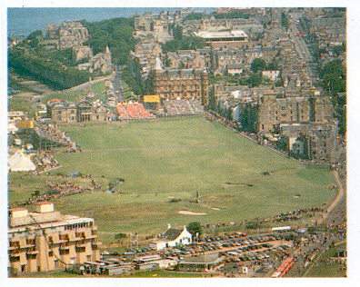

St Andrews is the oldest golf course in the world. Its layout and
natural hazards make it as challenging today as when it was
first played – possibly as early as the 1300s.
Today, St Andrews has four 18-hole courses and beginners’ 9-hole course, all owned by district council. The most famous of these is the Old Course on which are played some of the important tournaments.The Old Course is laid out on true links land (the ‘link’ between the shore and the farm land). It is mainly level, but unlike today’s carefully designed inland courses, the wind, sea, sand and other natural forces created the famous layout of St Andrews.
The links came about when the sea moved back from the land leaving banks of sand and salt water gullies. With time the sand-banks became dunes covered with marram grass and the gullies were colonized with other grasses. With the vegetation came rabbits that cropped the grass to make the turf suitable for golf.

The links land has being played on for many centuries. It started with
just five holes, in the 14th century, later expanded to seven, then 12
and finally 22 with 11 going out and 11 coming back. This was reduced to
18 in 1764 with nine out and nine back. The double green feature of the
Old Course is unique, born out of limited space 500 years ago. In parts
the course is less than 40yd (36.5m) wide. This meant using the same green
going out and coming back.
Television gives a false impression of St Andrews. The cameras are
mounted high, allowing the viewer to see all the trouble at a glance. At
a golfer’s eye level, very little of it is visible and the line to play
is seldom obvious. The general rule is: “When in doubt, play to the left
- and do keep out of whins (gorse)!” For golfers playing this old course
for the first time, even this maxim does not guarantee full protection
from its subtle hazards. Rises and falls in the ground, some slight, some
hillocks up to 8ft (2.4m) high, make it hard to judge both distance and
line. Many are blind. The broken ground makes it impossible to see the
base of the flags and a lot of the shots often appear shorter than they
really are, others are deceivingly longer.
The Holes to Watch
|
|
|
|
|
Click below for the official
St Andrews Web-Site